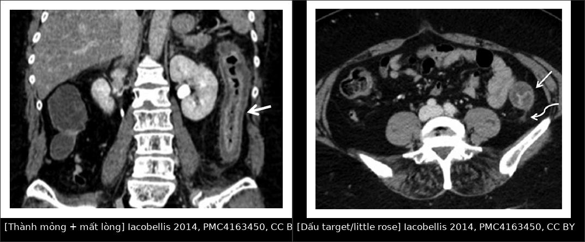
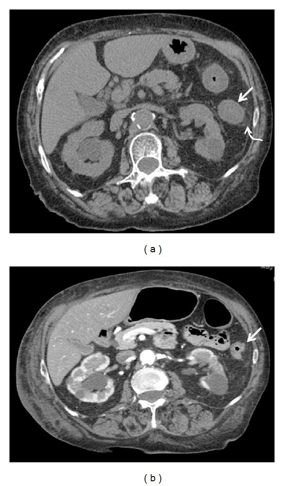
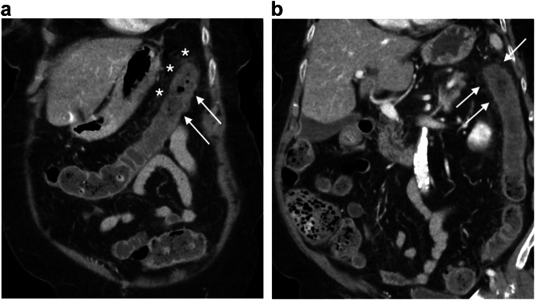

1911 — Viêm đại tràng thiếu máu / Ischemic colitis (IC)
Tags: pattern:day-thanh-dai-trang pattern:thumbprinting pattern:giam-ngam-thanh pattern:khi-trong-thanh pattern:hoai-tu-dai-trang pattern:hep-long-dai-trang vung:dai-trang vung:o-bung protocol:CT-bung-co-tuong-phan protocol:CTA-bung protocol:noi-soi-dai-trang score:Favier
Mức chắc chắn (certainty): tổng hợp y văn (literature synthesis) — 1 đoàn hệ CT 32 ca (BioMed Res Int 2014, PMC4163450, CC BY — nguồn cho hình ảnh và phân kỳ), 1 tổng quan lâm sàng–chẩn đoán (Front Surg 2017, PMC5591371, CC BY), 1 đoàn hệ 71 ca IC nặng có nội soi (Endosc Int Open 2021, PMC8589548, CC BY-NC-ND — chỉ dùng số liệu, không tạo phái sinh ảnh), 1 so sánh CTA vs CT (ISRN Gastroenterol 2014, PMC3947673, CC BY) và 1 bài giảng CT bụng cấp ở người già (Insights Imaging 2025, PMC12058634, CC BY 4.0). Nhóm không có bệnh nhân của mình. Chỗ hai nguồn mâu thuẫn (tỉ lệ tử vong "chung 22%" của tổng quan so với 34% trong đoàn hệ IC nặng) được ghi rõ là khác quần thể — đoàn hệ 71 ca chỉ gồm bệnh nhân IC nặng nhập ICU, không đại diện IC thường gặp.
Câu chốt: IC là bệnh của người già, đa số tự khỏi, nhưng là bệnh cảnh dễ bị đọc sai nhất trên CT bụng cấp. Ba số phải thuộc: (1) tỉ lệ mới mắc 22,9/100.000 người–năm và đang tăng, nhưng 80–85% không hoại tử, 94% điều trị ngoại trú; (2) điểm chốt trên CT không phải "thành dày" — trong 32 ca cấp, chỉ 28,1% có thành dày, còn 71,9% thành MỎNG như giấy (không tái tưới máu) và 100% có dịch quanh đại tràng; (3) mất ngấm thuốc thành ruột là dấu hiệu hoại tử xuyên thành (OR 10,7 cho độ Favier 3) → mổ, và CTA thường KHÔNG đổi xử trí (hẹp mạch 35,3% vs 9,3% nhưng không khác tỉ lệ mổ/tử vong).
1. Tổng quan bệnh học – cơ chế hình ảnh
1.1 Bệnh học: thiếu máu không tắc mạch là thể chính
- Định nghĩa: tổn thương đại tràng do giảm tưới máu (thiếu máu cục bộ) — từ loét niêm mạc nông đến hoại tử xuyên thành. Đây là thể thường gặp nhất của thiếu máu ruột (PMC5591371).
- Hai cơ chế: tắc mạch (huyết khối/thuyên tắc ĐM mạc treo dưới — IMA, hoặc nhánh) và không tắc mạch (tụt huyết áp, suy tim, co mạch, sau mổ tim/động mạch chủ). Trong 32 ca chụp CT cấp, 62,5% KHÔNG có tắc SMA/IMA, chỉ 37,5% có tắc IMA → đa số là thể không tắc.
- Phân bố theo "vùng bản lề" (watershed): góc lách (Griffith's point) — nơi động mạch viền Drummond mỏng, absent ở ~5% người; nối xích ma–trực tràng (Sudeck's point). Thêm vào đó vasa recta ở đại tràng phải thưa hơn → đại tràng phải cũng dễ thiếu máu khi hạ huyết áp kéo dài.
- Hệ quả hình ảnh: tổn thương từng đoạn (segmental), ranh giới rõ với đoạn lành, hay gặp đại tràng trái: 88% trong đoàn hệ Iceland 89 ca; đoàn hệ 71 ca IC nặng: 56% chỉ đại tràng trái, 10% lan rộng, chỉ 1,4% chỉ đại tràng phải.
- Mô bệnh: hoại tử biểu mô + phù và xuất huyết dưới niêm mạc → niêm mạc phồng thành nốt = thumbprinting; khi nặng → loét, hoại tử cơ, thủng.
1.2 Vật lý: vì sao thành ruột MỎNG lại là dấu hiệu nặng hơn thành DÀY
Đây là điểm ngược trực giác nhưng là chìa khoá đọc CT:
- Giai đoạn cấp, chưa tái tưới máu: mao mạch bị cắt dòng → không có dịch thoát vào thành → thành mỏng như giấy (paper-thin), mất trương lực, lòng giãn. Trong 32 ca: 71,9% ở tình trạng này, và nhóm này không có tái tưới máu hiệu quả → dễ hoại tử.
- Giai đoạn bán cấp, ĐÃ tái tưới máu: dòng máu trở lại → tăng tính thấm mao mạch + phản ứng viêm → phù thành → thành dày, ngấm thuốc kiểu "bánh xe"/"target" (lớp niêm mạc tăng ngấm, lớp dưới niêm mạc phù giảm ngấm). Trong 32 ca: thành dày 28,1% ở cấp nhưng 86,4% ở bán cấp. Nói cách khác: thành dày = dấu hiệu TỐT (có tái tưới máu), không phải dấu hiệu nặng.
- Dịch quanh đại tràng (pericolic fluid): 100% ở giai đoạn cấp và tiêu dần khi tái tưới máu hiệu quả → dấu hiệu nhạy nhất của cấp, nhưng không đặc hiệu (gặp trong viêm đại tràng nhiễm, đợt cấp IBD).
- Mất ngấm thuốc thành (absent/decreased mural enhancement): mao mạch không còn tưới máu xuyên thành → hoại tử. Đây là dấu hiệu đặc hiệu nhất cho hoại tử: trong đoàn hệ 71 ca, khuyết ngấm thuốc là yếu tố duy nhất liên quan độ Favier 3 (OR 10,7; 95% CI 1,7–67,1).
- Khí trong thành (pneumatosis) / khí trong tĩnh mạch cửa: khí từ lòng ruột xuyên qua niêm mạc hoại tử vào thành/tĩnh mạch → dấu hiệu hoại tử nặng, chỉ định mổ cấp.
- Co thắt/giãn: giãn mất trương lực (ileus khu trú) ở đoạn thiếu máu là dấu hiệu nặng; hẹp lòng ở giai đoạn mạn do xơ hoá (thành dày không đều, lòng hẹp).
1.3 Dịch tễ và tiên lượng — bệnh ngoại trú, tử vong tập trung ở nhóm nặng
- Mới mắc 22,9/100.000 người–năm, đang tăng (PMC8589548); Kaiser 424 ca: 94% ngoại trú.
- Không hoại tử 80–85%, hoại tử 15%, viêm toàn đại tràng tối cấp 1% (PMC5591371).
- Tử vong chung ~22% (tổng quan), nhưng nhóm IC nặng có nội soi: 34%; sau cắt đại tràng: 21% (10.111 ca Mỹ, giảm 4,5%/năm); 5–50% tuỳ mức nặng.
- Tái phát: 8,5% (118 ca); 2,9% năm 1 / 9,7% năm 5 (135 ca); đoàn hệ Iceland 15% sau 3 năm; sống 5 năm 69% (phần lớn tử vong không do IC).
- Sau mổ động mạch chủ: IC 2,9%, tử vong > 50%; trong dân số mổ phình ĐMC 2,2%, vỡ 8,9%, mổ hở 1,9% vs EVAR 0,5%; sau mổ tim/ĐMC 15% phát triển IC.
2. Mẫu hình + chẩn đoán phân biệt theo vị trí (gamut)
2.1 Gamut theo hình thái thành đại tràng
- Thành mỏng như giấy + giãn + mất ngấm thuốc: IC cấp không tái tưới máu / hoại tử (mổ).
- Thành dày từng đoạn, ngấm thuốc "target"/"bánh xe": IC bán cấp sau tái tưới máu, viêm đại tràng nhiễm, IBD, viêm đại tràng do thuốc.
- Thành dày + phù dưới niêm mạc dạng nốt (thumbprinting): IC, xuất huyết dưới niêm mạc (kháng đông), nhiễm khuẩn (E. coli O157, Shigella).
- Thành dày + khí trong thành: hoại tử (IC, tắc mạch, viêm đại tràng giả mạc nặng), tràn khí màng bụng nếu thủng.
- Thành dày không đều + hẹp lòng + không phù: IC mạn/xơ hoá, ung thư đại tràng, viêm đại tràng do xạ.
2.2 Gamut theo vị trí
- Góc lách / đại tràng trái: IC (kinh điển), viêm đại tràng do tắc nghẽn phía trên (ung thư đại tràng góc lách).
- Đại tràng xích ma – trực tràng: IC (Sudeck), viêm túi thừa, viêm đại tràng do xạ, bệnh lây qua đường tình dục.
- Đại tràng phải: IC thể phải (nặng hơn), viêm đại tràng do tắc nghẽn, viêm ruột thừa/viêm hồi manh tràng, nhiễm Yersinia/Campylobacter.
- Toàn đại tràng: viêm đại tràng tối cấp (fulminant), C. difficile, IBD toàn thể, sốc.
2.3 Gamut theo bối cảnh
- Người > 60 tuổi, đau bụng trái + đi máu, có bệnh mạch vành/đái tháo đường: IC.
- Sau mổ tim/ĐMC/ghép tạng, tụt huyết áp: IC (thể không tắc).
- Sau kháng sinh phổ rộng, sốt, tiêu chảy: C. difficile (bắt chước IC).
- Táo bón nặng, phân rắn ứ đọng: viêm đại tràng do phân (stercoral colitis) — có thể loét/thủng.
- Đau bụng không tương xứng + lactate cao + rung nhĩ: thiếu máu mạc treo cấp (SMA) — khác hoàn toàn IC.
3. Bảng so sánh phân biệt (ma trận đối chiếu)
| Thực thể (entity) | Hình ảnh điển hình | Chốt vào (rule-in) | Chốt loại (rule-out) | Gợi ý xác nhận |
|---|---|---|---|---|
| Viêm đại tràng thiếu máu (IC) | Từng đoạn, đại tràng trái; dịch quanh đại tràng 100% ở cấp; thành mỏng (71,9%) hoặc dày (86,4% ở bán cấp); thumbprinting | Đoạn ngắn ở vùng bản lề + mạch mạc treo THÔNG + bệnh nhân > 60 tuổi + đi máu | Tổn thương lan toàn đại tràng + mạch tắc hoàn toàn → nghĩ thiếu máu mạc treo | CT bụng có cản quang thì cửa; nội soi không chuẩn bị để phân độ |
| Thiếu máu mạc treo cấp (SMA) | Ruột non (không phải đại tràng), thành mỏng, mất ngấm thuốc, khí trong thành/tĩnh mạch cửa, tắc SMA | Đau dữ dội không tương xứng + lactate cao + tắc SMA trên CTA | Tổn thương khu trú đại tràng + mạch thông → IC | CTA cấp cứu; mổ lấy huyết khối |
| Viêm đại tràng nhiễm / C. difficile | Thành dày lan toàn đại tràng, dấu ấn ngón tay, phù dưới niêm mạc nặng, dịch ổ bụng nhiều | Sốt + tiêu chảy + kháng sinh trước đó + tổn thương lan rộng/liên tục | Tổn thương từng đoạn rõ + mạch máu bệnh lý → IC | Cấy phân, độc tố C. difficile, nội soi thấy giả mạc |
| Viêm loét đại tràng (UC) | Liên tục từ trực tràng, mất haustra, thành dày đều, tăng ngấm niêm mạc | Trực tràng luôn bị + liên tục + bệnh sử nhiều đợt | Chừa trực tràng + từng đoạn → IC | Nội soi + mô bệnh (viêm mạn, crypt distortion) |
| Viêm túi thừa | Túi thừa + dày thành khu trú + thâm nhiễm mỡ quanh đại tràng, thường xích ma | Túi thừa thấy được + viêm mỡ quanh đoạn đó | Không thấy túi thừa, tổn thương dài theo mạch → IC | CT; nội soi trì hoãn (nguy cơ thủng) |
| Viêm đại tràng do tắc nghẽn (ung thư phía trên) | Đoạn đại tràng trước chỗ hẹp bị dày/giãn, có khối/hẹp ở đầu dưới | Thấy khối hoặc hẹp lòng phía dưới đoạn dày | Không có chỗ hẹp phía trên → IC nguyên phát | Luôn đọc lên trên đoạn dày; nội soi sau khi ổn định |
| Viêm đại tràng do phân (stercoral) | Phân rắn ứ đọng + thành dày + loét, chủ yếu trực tràng–xích ma | Khối phân lớn + thành dày khu trú + bệnh nhân táo bón/giường bệnh | Không ứ phân → IC | CT; tháo phân, theo dõi thủng |
3.1 Trình tự đọc CT — bốn dấu hiệu quyết định
- Vị trí có "từng đoạn" và nằm ở vùng bản lề không? (góc lách, xích ma) — từng đoạn + chừa trực tràng = IC.
- Đo độ dày thành: mỏng như giấy = không tái tưới máu (nặng); dày = đã tái tưới máu (thường lành).
- Có mất ngấm thuốc / khí trong thành / khí cửa không? → hoại tử, mổ.
- Có chỗ hẹp phía trên đoạn dày không? → tắc nghẽn do ung thư (bài 162).
4. Protocol chụp + phân độ + xử trí
4.1 Protocol
- CT bụng–chậu có cản quang tĩnh mạch, thì tĩnh mạch cửa, lát ≤ 3 mm là chuẩn; không cần thì động mạch trừ khi nghi thiếu máu mạc treo cấp.
- CTA không thường quy: trong so sánh 34 ca CTA vs 54 ca CT có cản quang, CTA phát hiện hẹp nhiều hơn (35,3% vs 9,3%, p = 0,0025) nhưng không khác tỉ lệ mổ và tử vong → CTA không đổi xử trí; chỉ làm khi nghi tắc mạch hoặc tái phát.
- Nội soi đại tràng: không chuẩn bị, trong 48 giờ, bơm hơi tối thiểu, ưu tiên CO₂ (hấp thu nhanh, giãn mạch); không chuẩn bị ruột vì có thể gây giãn độc/ thủng; không nội soi khi có viêm phúc mạc.
- X-quang bụng chỉ để loại trừ thủng/giãn; siêu âm có ích khi không có CT: dày thành > 10 cm chiều dài ở người > 50 tuổi là gợi ý mạnh (PMC5591371).
4.2 Phân độ và xử trí
flowchart TD
A[Nghi viêm đại tràng thiếu máu: >60 tuổi, đau bụng trái, đi máu] --> B[CT bụng có cản quang thì cửa]
B --> C{Thành mỏng như giấy, mất ngấm thuốc, khí trong thành?}
C -->|Có| D[Hoại tử xuyên thành - mổ cấp + cắt đoạn, cân nhắc bỏ ngỏ miệng nối]
C -->|Không| E{Thành dày từng đoạn + dịch quanh?}
E -->|Không| F[Xem lại chẩn đoán: nhiễm, IBD, tắc nghẽn]
E -->|Có| G[Điều trị nội: dịch, giảm đau, kháng sinh theo bệnh nền, ngừng thuốc co mạch]
G --> H{Trong 24-48 giờ: đau tăng, viêm phúc mạc, sốc, toan?}
H -->|Có| I[Nội soi để phân độ Favier HOẶC mổ nếu viêm phúc mạc]
H -->|Không| J[Nội soi không chuẩn bị trong 48 giờ]
J --> K{Favier 3 - hoại tử lan rộng?}
K -->|Có| L[Cắt đại tràng, cân nhắc second-look 24-72 giờ]
K -->|Không| M[Theo dõi: lành trong 2 tuần, tái phát 2,9%/năm 1]
- Nội soi phân độ Favier (đoàn hệ 71 ca IC nặng): độ 1: 21%, độ 2: 45%, độ 3: 34%. Độ 3: bất ổn huyết động 50–55%, cắt đại tràng 63–68%, tử vong 50–55%.
- Quyết định mổ thực tế: dựa trên huyết động 62%, CT 14%, nội soi chỉ 10% → nội soi không phải "trọng tài"; không được trì hoãn mổ vì chờ nội soi.
- Sau mổ: 25% cần cắt thêm đại tràng; second-look nội soi 24–72 giờ có tỉ lệ sống ~65%; đại tràng phải → cắt nửa đại tràng phải + hồi tràng ra da.
- Không mổ được / hoại tử lan: tỉ lệ tử vong 33–50%.
5. Biến thể bình thường và cạm bẫy
- CT bình thường trong thể nhẹ: 12% ca nặng có CT không bất thường (48 ca chụp: 88% bất thường) — CT âm không loại trừ IC.
- "Thành dày = nặng" là sai: 71,9% ca cấp có thành mỏng; thành dày lại là dấu hiệu tái tưới máu → đừng mổ chỉ vì thành dày.
- Bỏ sót ung thư phía trên: đoạn dày do tắc nghẽn có thể giống hệt IC — luôn truy tìm chỗ hẹp/khối ở đầu dưới (bài 162). Ca minh hoạ: IC trên nền ung thư đại tràng phải.
- Nhầm với nhiễm trùng: C. difficile cho tổn thương lan rộng, dày thành nặng, cổ trướng nhiều — hỏi kháng sinh trước đó.
- Không chuẩn bị ruột trước nội soi: chuẩn bị có thể gây giãn độc/thủng; bơm hơi quá mức làm nặng thiếu máu.
- Nội soi "niêm mạc hoại tử nhưng thanh mạc bình thường": lệch niêm mạc–thanh mạc 45–50% → đánh giá thấp hơn mức hoại tử thật; không dựa vào nội soi để quyết định không mổ.
- Không dùng thuốc co mạch/vasopressor liều cao khi chưa cần: làm nặng thiếu máu ruột; cân nhắc truyền dịch + hỗ trợ trước.
- IC sau mổ động mạch chủ là thể tử vong > 50% — bệnh nhân đau bụng + toan lactic sau mổ ĐMC phải CT ngay, không chờ.
6. Tự lượng giá — Blind Quiz
Ca 1 — Nam 66 tuổi, đau bụng trái 1 ngày, đi máu; tiền sử tăng huyết áp, rung nhĩ đã ngừng kháng đông.

- Hỏi: (1) Hai dấu hiệu trên CT; (2) thành mỏng hay dày là dấu hiệu nặng hơn; (3) bước tiếp theo?
Bấm để hiện đáp án
- Dấu hiệu: (A) mặt cắt trục/coronal: thành đại tràng trái mỏng, lòng gần như mất (mũi tên) — thiếu máu chưa tái tưới máu; (B) thành dày + ngấm thuốc kiểu "target"/"little rose" (mũi tên trắng + mũi tên cong) — lớp niêm mạc tăng ngấm, dưới niêm mạc phù.
- Chẩn đoán: viêm đại tràng thiếu máu — tổn thương từng đoạn đại tràng trái, mạch mạc treo thông.
- Thành mỏng nặng hơn: thành mỏng = không tái tưới máu (71,9% ca cấp) → nguy cơ hoại tử; thành dày = đã tái tưới máu, tiên lượng tốt hơn.
- Bước tiếp: nội khoa (dịch, giảm đau, ngừng thuốc co mạch); nội soi không chuẩn bị trong 48 giờ nếu không có viêm phúc mạc; mổ nếu mất ngấm thuốc/khí trong thành/viêm phúc mạc.
- Nguồn ảnh: Iacobellis F và cs., BioMed Res Int 2014;2014:895248, PMC4163450 Fig. 2–3 — CC BY, ảnh nguyên bản (ghép letterbox, không crop/kéo giãn).
Ca 2 — Cùng bệnh nhân, sau 5 ngày điều trị nội khoa: đỡ đau, hết đi máu, CT chụp lại.

- Hỏi: Vì sao thành dày lên sau điều trị? Dịch quanh đại tràng nói gì?
Bấm để hiện đáp án
- Dấu hiệu: (a) thành đại tràng dày (mũi tên thẳng) + dịch quanh đại tràng (mũi tên cong) — phù do tái tưới máu.
- Vì sao dày: mao mạch mở lại → tăng tính thấm + viêm → phù dưới niêm mạc; đây là dấu hiệu TỐT, không phải tiến triển.
- Dịch quanh: có ở 100% ca cấp, tiêu dần khi tái tưới máu hiệu quả; còn nhiều + đau tăng → nghĩ hoại tử/thủng.
- Nguồn ảnh: Iacobellis F và cs., BioMed Res Int 2014, PMC4163450 Fig. 4 — CC BY.
Ca 3 — Nam 90 tuổi, đau bụng trái, CT thì cửa.

- Hỏi: Đoạn nào bị tổn thương, vì sao đúng vị trí đó? Cần tìm thêm gì trước khi kết luận IC nguyên phát?
Bấm để hiện đáp án
- Dấu hiệu: (a) trục + (b) coronal: dày thành từng đoạn ở góc lách, ngấm thuốc phân lớp (mũi tên), thâm nhiễm mỡ quanh đại tràng.
- Vì sao góc lách: điểm bản lề Griffith — động mạch viền Drummond mỏng/absent ~5%, dễ thiếu máu khi hạ tưới máu.
- Tìm thêm: chỗ hẹp/khối phía trên (ung thư gây tắc nghẽn), túi thừa, phân ứ đọng (stercoral), và mạch mạc treo (nếu nghi tắc) — trước khi gán "IC nguyên phát".
- Nguồn ảnh: Coutureau J, Millet I, Taourel P., Insights into Imaging 2025;16(1):95, PMC12058634 Fig. 2 — CC BY 4.0, ảnh nguyên bản.
Bài liên quan chéo
- 1908 – Thiếu máu mạc treo & bóc tách động mạch tạng — hàng phân biệt bắt buộc: đau không tương xứng, ruột non, phải mổ.
- 162 – Tắc ruột — viêm đại tràng do tắc nghẽn phía trên khối u.
- 163 – Pylephlebitis & huyết khối tĩnh mạch mạc treo — khí tĩnh mạch cửa, nhiễm trùng ổ bụng.
- 161 – Viêm ruột thừa cấp — đau hố chậu phải ở người già.
- 115 – Khí tự do trong ổ bụng — thủng do hoại tử.
- 100 – Tổng quan hệ Bụng
Ảnh
- Tên file:
1911_viem-dai-trang-thieu-mau_Modality_SourceID.jpg; nguồn + giấy phép từng ảnh ởimages/CREDITS.md. - Ảnh ghép
images/composite_target_sign.jpgtạo bằngtools/make_composite.py(letterbox nền đen, không crop/kéo giãn), cả 2 ô CC BY. - Không tải ảnh từ PMC8589548 (CC BY-NC-ND): chỉ dùng số liệu.
Không dùng để chẩn đoán độc lập khi chưa có người hướng dẫn.